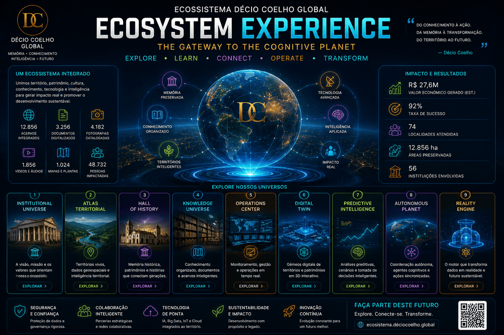
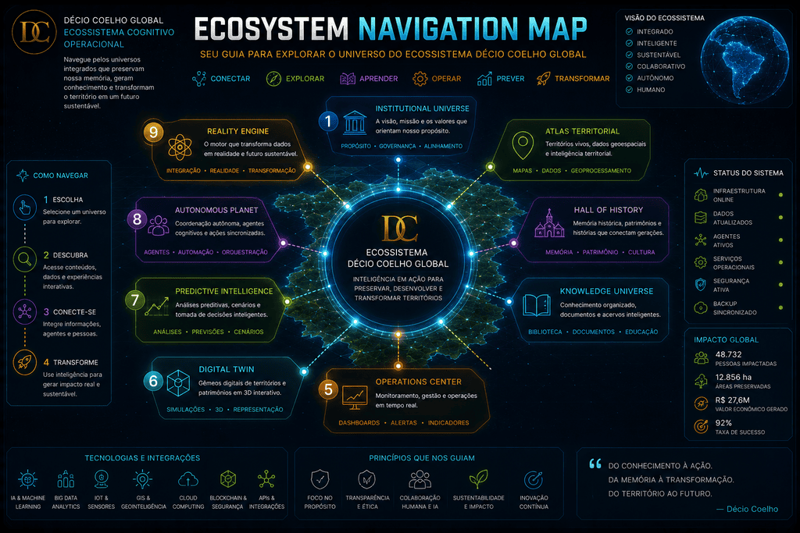
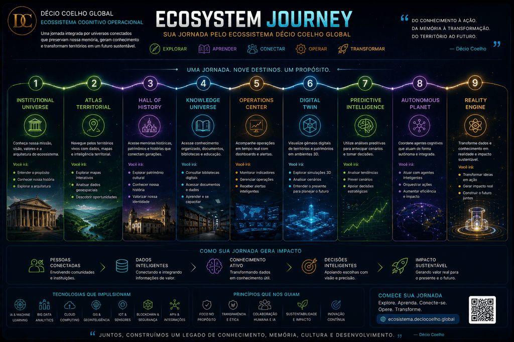
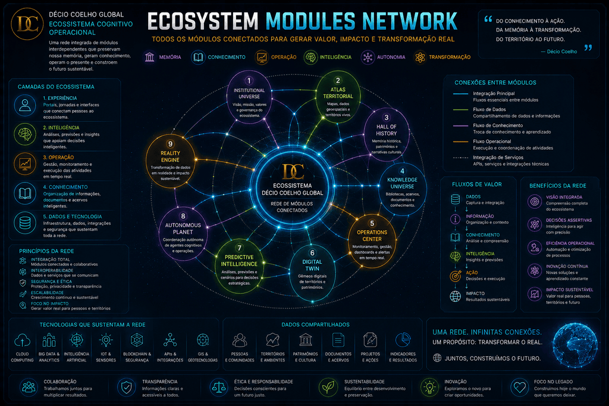
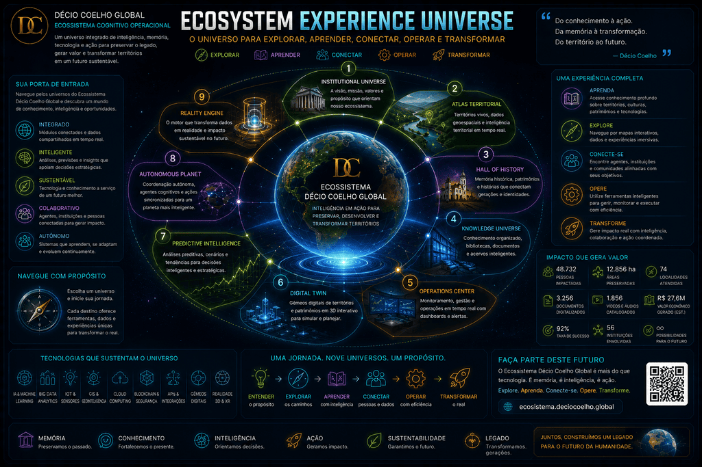

ECOSSISTEMA DÉCIO COELHO GLOBAL
A Experience Platform é a porta de entrada para o Planeta Cognitivo: uma jornada integrada por memória, território, patrimônio, conhecimento, inteligência, operação e transformação.

Mapa de Navegação

A Jornada do Ecossistema

Rede de Módulos

Universo da Experiência

Explore os Universos
🏛️ Institutional Universe
Manifesto, Constituição Cognitiva, Arquitetura Global e fundamentos institucionais.
🌎 Atlas Territorial Vivo
Territórios, complexos patrimoniais, atrativos, memórias e inteligência territorial.
🏛️ Hall of History
A jornada da telégrafia à IA Generativa e ao nascimento do Planeta Cognitivo.
📚 Knowledge Universe
Biblioteca cognitiva, memória viva, documentos, conhecimento e legado.
📡 Mission Control
Monitoramento, indicadores, alertas, painéis e visão executiva do Ecossistema.
🧠 Digital Twin
Representação digital viva dos territórios, patrimônios, operações e conhecimento.
🔮 Predictive Intelligence
Tendências, cenários futuros, riscos, oportunidades e recomendações estratégicas.
🤖 Autonomous Planet
Agentes cognitivos, coordenação, execução inteligente e evolução contínua.
🚀 Reality Engine
Conexão entre inteligência digital e transformação real nos territórios.